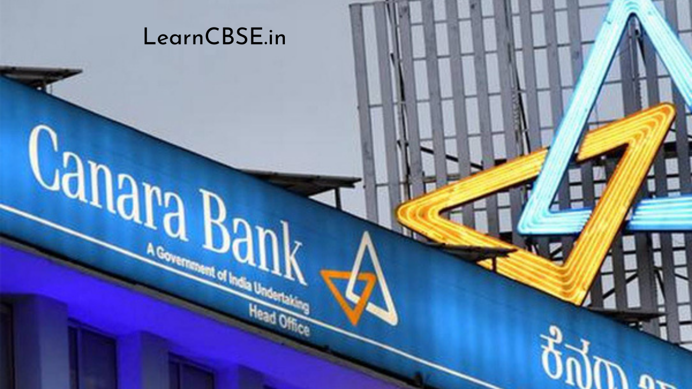

Canara Bank Scholarship 2021-2022: The scholarship gateway of Canara Bank also referred to as the Scholar’s Corner has been appointed by UGC as the Nodal Agency for disbursing UGC scholarship and grants. The Scholarship Canara Bank Portal is a state-of-the-art scholarship disbursement scheme. Also, it is incorporated with the Public Financial Management System (PFMS) which is in accordance with UGC’s regulations to distribute scholarship/fellowship quantity through DBT.
It is a well-organized and maintained gateway that ensures timely disbursement of scholarships and in the submission and choice method, there are no problems. It hosts a number of UGC-offered scholarships. It is built into the Public Financial Management System and uses DBT to distribute the scholarships.
You can also find more Scholarship Articles for 12th passed, 10th passed Students and many more.
Canara Bank Scholarship List And Rewards
The list of UGC scholarships/fellowships disbursed through the scholarship portal of the Canara Bank Fellowship is given below.
- Radhakrishnan Fellowship: Up to Rs. 41, 900 for 3 years per month along with Rs. 50,000 annual contingency grant and other advantages.
- National Fellowship for OBC: Fellowship sums up to Rs. 28,000 per month along with contingency grant and aid from escorts/reader for applicants with different skills.
- Kothari Fellowship: A monthly fellowship fee up to Rs. 46,500 along with contingency grant, HRA, and other advantages
- NET JRF Fellowship: The partners earn up to Rs. 28,000 monthly fellowship quantity along with contingency grant, HRA, and escort/reader aid.
- Indira Gandhi Single Girl Child Scholarship: Monthly scholarship allowance of Rs. 3100
- Maulana Azad National Fellowship: Fellowship sums up to Rs. 28,000 per month in conjunction with contingency grant and aid to escorts/readers for different applicants
- Rajiv Gandhi National Fellowship for SC: Fellowship amount of up to Rs. 28,000 per month along with contingency grant, HRA and escorts/reader allowance for physically handicapped and blind candidates
- Ishan-Uday Scholarship: Rs. 5400 per month for applicants studying general degree classes, Rs. 7800 per month for applicants undertaking technical/medical/professional/paramedical classes
- Swami Vivekanand Single Girl Child Scholarship: Fellows earn a monthly fellowship of up to Rs. 28,000 along with contingency grant and aid to PwD applicants for escort/reader.
- Emeritus Fellowship: A fee of Rs. 31,000 per month for 2 years together with a contingency grant of Rs. 50,000 per year
- Postdoctoral Fellowship for Women: A fellowship sum of up to Rs. 46,500 per month together with a contingency award of Rs. 50,000 per year for 5 years Rs. 3,100 per month for 2 years
- PG Scholarship for University Rank Holders: Rs. 3,100 per month for 2 years
- Postdoctoral Fellowship for SC/ST: A fellowship quantity of up to Rs. 46,500 per month together with a contingency grant of Rs. 50,000 per year for 5 years and other
- PG Scholarship for Professional Courses for SC/ST: Rs. 7,800 per month for 2 years for ME / MTech learners, Rs. 4,500 per month for 2 years for other specialist classes
- BSR Fellowships in Sciences: A fellowship quantity of up to Rs. 27,900 per month together with a contingency grant of up to Rs. 25,000 per year
- UGC-BSR Faculty Fellowship Scheme: A research grant of Rs. 5 Lakh per year and a fellowship of Rs. 50,000 per month for up to 3 years
- AICTE GATE Scholarship: Rs.12,400 per month.
Now that you are aware of the UGC scholarships/fellowships provided through the scholarship portal of Canara Bank, let’s read short information about these systems as shown below.
Canara Bank Scholarship Verification
Canara Bank Scholarship Eligibility Criteria
The UGC scholarships/fellowships mentioned on the Canara Bank Scholarship Portal are primarily for graduate students wishing to practice study as their profession. The comprehensive eligibility requirements to be fulfilled by a candidate before registering for UGC Canara bank portal scholarship systems are given below. Canara student corner login.
| Name of scholarship/fellowship | Eligibility |
| Radhakrishnan Fellowship | Candidate must be unemployed Must be under the era of 35 as at the last implementation date (relaxation of 5 years for reserved classifications) Must have at least 55 percent marks at UG and 60 percent marks at PG stage (relaxation of 5 percent marks for reserved classifications) |
| National Fellowship for OBC | Applicant must be unemployed Must have completed the postgraduate examination Annual household earnings shall not exceed 5 percent. In Science/Humanities/Social Science/Technology |
| Kothari Fellowship | Applicant must hold a Ph.D. in the relevant subject matter under the Science Faculty Must be unemployed and under the age of 35 years (relaxation of 3, 5 and 10 years for reserved OBC, SC / ST / Women and PwD categories, respectively) |
| NET JRF | The applicant must have completed a Master’s degree with at least 55 percent marks in Humanities, Social Science, Computer Science and Applications, Electronic Science, etc. |
| Indira Gandhi Single Girl Child Scholarship | The applicant must be her parents ‘ only kid. The applicant must not be over the era of 30 years. |
| Maulana Azad National Fellowship | The applicant must have a skilled examination of CBSE / NTA-UGC-NET / CSIR-NET. Must be recorded as M.Phil./Ph. D. is periodic and full-time. Student Must be a minority group Annual revenue shall not exceed Rs. 6 Lakh. |
| Rajiv Gandhi National Fellowship for SC | The applicant must be classified as SC and ST. Postgraduate must be completed M.Phil./Ph. D. must be recorded in full time. |
| Ishan-Uday Scholarship | Courses as a frequent student Applicant must be a resident of North-East States Annual household revenue not exceeding Rs. 4.5 In the first year of any degree course, including an incorporated course, Lakh applicant must have obtained entry. |
| Swami Vivekanand Single Girl Child Scholarship | A single girl child’s scholarship is accessible only. In a recognized Indian University / Institute / College, applicants must pursue a periodic full-time Ph.D. program in social sciences. The highest age threshold for candidates in the general category for SC / ST / OBC and PwD is 40 years and 45 years. The scholarship is also accessible to applicants from transgender. |
| Emeritus Fellowship | The scholarship is accessible to recognized institutions/colleges/universities extremely skilled, superannuated and skilled educators. The candidate must have donated performance studies and released the job to his / her service profession. The grant enables the awardee to function up to 70 years of an era with a well-defined time-bound action scheme. |
| Postdoctoral Fellowship for Women | Only females can apply for applicants who are unemployed and hold a PhD degree. Applicant’s age should not exceed 55 years (relaxation of 5 years in era to SC, ST, OBC, PwD applicants) Minimum proportion of marks acquired by general category applicants at UG level should be 55 percent and 60 percent at PG stage (relaxation of 5 percent marks to SC, ST, OBC, PwD applicants) Transgender applicants may also apply. |
| PG Scholarship for University Rank Holders | Students who have finished their degree in the following courses may apply–Life Sciences Chemical Sciences Physical Sciences Mathematical Sciences Earth Sciences Social Sciences Languages Commerce Applicant must be the first or second-grade holder at the UG stage and must be registered in full time. |
| Postdoctoral Fellowship for SC/ST | It is possible to apply for unemployed applicants with a Ph.D. in the appropriate topic. For masculine candidates, the maximum age threshold is 50 years while it is 55 years for woman candidates. Applicants must have achieved 50% UG-level marks and 55% PG-level marks. Applicants for transgender may also apply. |
| PG Scholarship for Professional Courses for SC/ST | The applicant must be in the category SC / ST. The classes authorized by major legislative agencies such as MCI, NCTE, Bar Council of India, NCTIS, RCI, DCI, PCI, AICTE, Development Authority of India, Forensic Regulatory, INC and ICAR are regarded to be competent classes for which the scholarship applies. |
| BSR Fellowships in Sciences | The applicant must be a worthy student ready to conduct sophisticated research and studies leading to a Ph.D. in science. Must belong to the Departments of Sciences, Bio-Sciences, Agricultural Sciences, Engineering Sciences of qualified universities |
| UGC-BSR Faculty Fellowship Scheme | The applicant must have effectively overseen the Ph.D. thesis of 15 (in Basic Sciences) or 10 (in Engineering & Technology) full-time pupils, 5 of whom have graduated in the last 10 years. As Principal Investigator, financed by national/international organizations, applicants must have completed a minimum of 3 study initiatives over the past 10 years. |
| AICTE GATE Scholarship | The applicant’s GATE/GPAT rating must be applicable. Must be accepted to a periodic, full-time AICTE program in the sector of engineering, design or dentistry such as a Master of Engineering, a Master of Technology, a Master of Architecture or a Master of Pharmacy. |

Canara Bank Scholarship Application Procedure
The economic assistance provided under the Canara scholarships/fellowships mentioned in this paper will be disbursed through the scholarship portal of Canara Bank. All these plans, however, which provide economic support to deserving applicants, are implemented through other channels. Let’s figure out how and where you can apply for these UGC scholarships under the Canara bank student portal/Canara bank scholar portal.
| Name of scholarship/fellowship | How to apply? and Application Period |
| Radhakrishnan Fellowship | Apply internet via UGC’s official portal, NA |
| National Fellowship for OBC | Apply internet via UGC’s official portal, NA |
| Kothari Fellowship | Online application through the official website of the DSKPDF (Dr. D. S. Kothari Post-Doctoral Fellowship), Runs throughout the year |
| NET JRF | Online request through the official website of the NTA (National Testing Agency), Application announced twice a year, during the month of June and December |
| Indira Gandhi Single Girl Child Scholarship | Apply the internet through the official website of UGC, October-November |
| Maulana Azad National Fellowship | Apply the internet through the official website of UGC, December-January |
| Rajiv Gandhi National Fellowship for SC | Apply the internet through the official website of UGC, NA |
| Ishan-Uday Scholarship | Apply online via the National Stipend Portal, October-November |
| Swami Vivekanand Single Girl Child Scholarship | Apply the internet through the official website of UGC, NA |
| Emeritus Fellowship | Apply the internet through the official website of UGC, NA |
| Postdoctoral Fellowship for Women | Apply the internet through the official website of UGC, NA |
| PG Scholarship for University Rank Holders | Apply online via the National Stipend Portal, October-November |
| Postdoctoral Fellowship for SC/ST | Apply the internet through the official website of UGC, NA |
| PG Scholarship for Professional Courses for SC/ST | Apply online via the National Stipend Portal, October-November |
| BSR Fellowships in Sciences | Apply the internet through the official website of UGC, December |
| UGC-BSR Faculty Fellowship Scheme | Use the FRPS (Faculty Research Promotion Schemes) portal of the UGC to apply online, Runs throughout the year |
| AICTE GATE Scholarship | Apply online through AICTE portal, September-October |
FAQ’s on UGC Canara Bank Scholarship
Question 1.
How can a pupil register for any of the scholarships on the scholarship portal of Canara Bank?
Answer:
For the implementation method for each scholarship, see the table above under the ‘ Application Process’ chapter.
Question 2.
Are candidates paid for registering for the scholarship with an entry charge?
Answer:
When registering for the scholarship, candidates are not paid any type of registration fee.
Question 3.
When can a pupil register for Canara Bank Scholarship Portal scholarships?
Answer:
The duration of implementation for each Canara Bank grant portal scholarship differs. For information on their corresponding implementation duration, please refer to the’ Application Process ‘ segment.
Question 4.
How is the quantity of the scholarship paid to the chosen pupils?
Answer:
The sum of the scholarship/fellowship is disbursed to learners in the beneficiaries ‘ accounts through Direct Benefit Transfer (DBT).